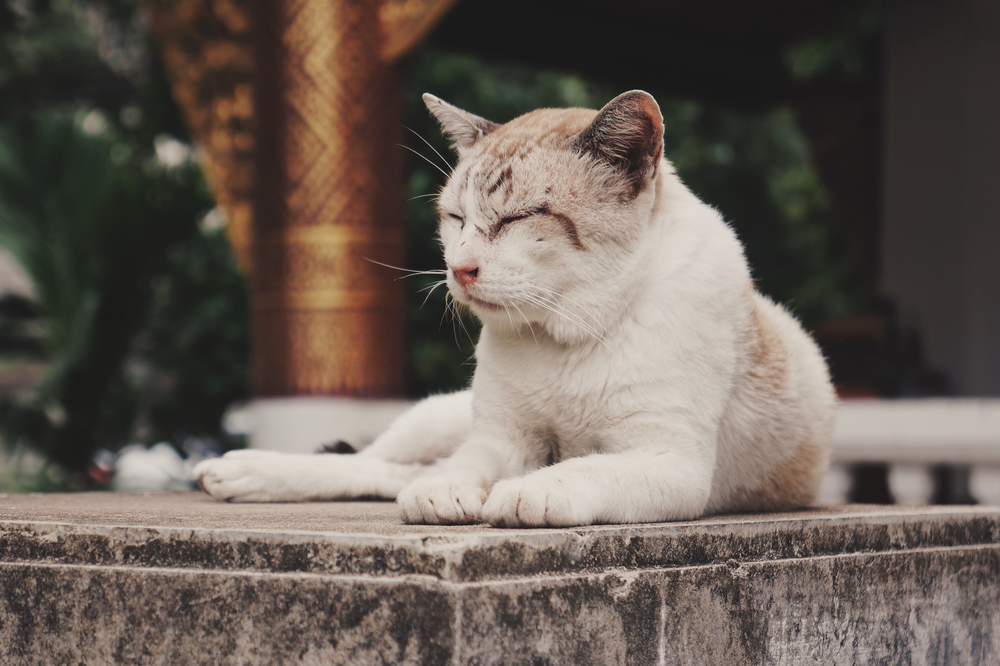
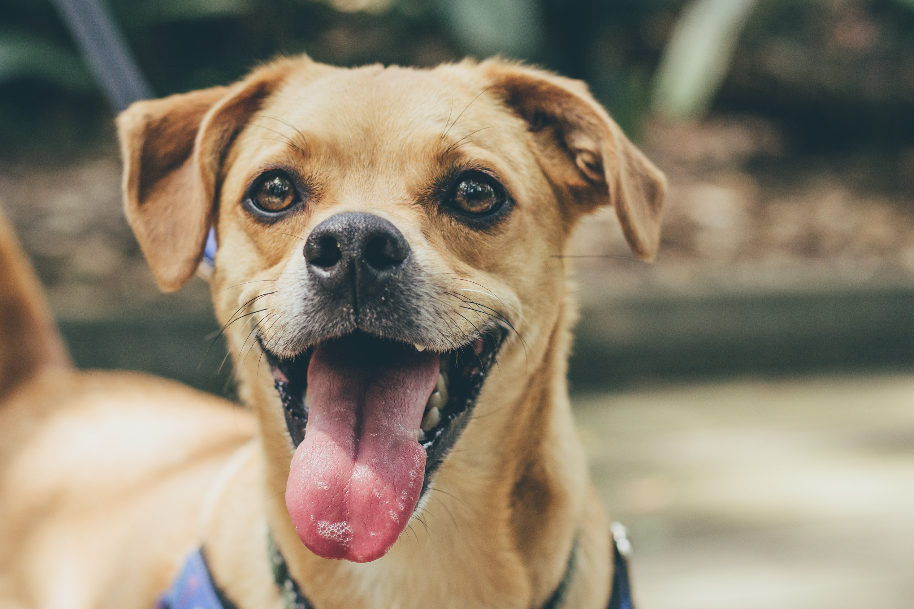

|  |
OSCAR Oscar es un gato rescatado, tiene 4 años, esta castrado y con sus vacunas al día. Sufrió maltrato animal por parte de su “familia” anterior. Es muy cariñoso y noble, a pesar de haber sufrido tanto daño. Aun estamos a tiempo para poder cambiar su vida y sanar su corazón. ADOPCIÓN RESPONSABLE. |
|  |
LUPE Perrita de 8 años, rescatada de la calle. Esta esterilizada, con sus vacunas al día, desparasitada internamente y externamente. Lupe busca un hogar donde pueda recibir y dar mucho amor y alegría. Es enérgica, amistosa y amorosa. ADOPCIÓN RESPONSABLE. |

|
FERMÍN Erizo de 1 año, fue rescatado de una granja ilegal de erizos de tierra para su comercialización. Fermín es un erizo un poco tímido pero muy amigable al tomar confianza, requiere de muchos cuidados y atención, ya que estuvo hospitalizado. Curemos sus heridas dándole amor y calor hogareño. ADOPCIÓN RESPONSABLE. |